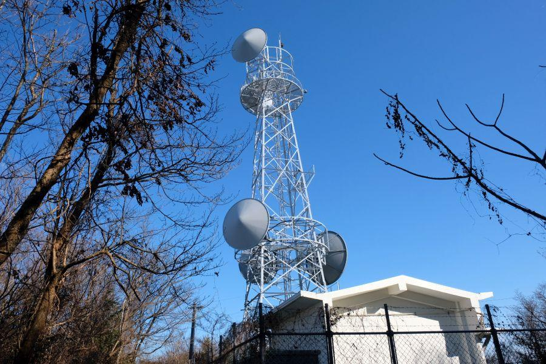

阿波最古と噂される古刹に集まる力自慢たち < 大山寺 / 徳島県上板町 >
徳島県は大山(おおやま)の中腹に位置する、大山寺(たいさんじ / おおやまでら)。
お寺の始まり(開基)は西暦500年頃と、非常に古い。
一般的に 仏教が伝来したのが538年。倭(わ、現 日本)と関係が深かった百済(くだら、現 朝鮮半島南西部)の聖王(せいおう)が、仏像と経典を倭に献上したことが、公式的に仏教が伝来した年とされる(552年説もあり)。
それでいくと 大山寺が開かれた年との辻褄が合わない。
まず考えられるのは、その開基の年は あくまで伝説の域を出ない、という事。
もう一つは、538年という年は 朝廷に仏教が届いたことが記録された初めてのタイミングであり、非公式的 もしくは民間レベルでは、それより早く仏教が日本に伝来していた、ということかもしれません。
いずれにしろ 歴史ある古刹であることに変わりはなく、今でも多くの参拝者が ご利益を求めてこちらの寺院を訪れます。
枝垂銀杏
まず目に入る 大きな銀杏の木。
枝の張り、垂れ方。境内を覆わんばかりの大銀杏の本番は 11月中旬。真っ黄色に染まった大木は 麓からもその存在がわかるほど。
イチョウは幹から出る気根(きこん)の形状を乳房になぞらえて、 「乳の出が良くなる」 「乳銀杏(ちちいちょう)」 と、女性の信仰の対象になることが多い。
この時は冬期で葉が全て落ち、次の春を迎えるための英気を養っていました。
義経ゆかりの愛馬・薄雪(うすゆき)
源義経の愛馬・薄雪(うすゆき)。
神戸須磨での 一ノ谷の合戦後。
義経らは讃岐國(香川)へ落ち延びた平家の軍勢を追って 同じように船出したが、嵐に遭い 阿波國(徳島)へ漂着した。
そこから陸路で阿讃國境の大坂峠を越えて讃岐國へ入り、屋島で次の一戦(屋島の合戦)を交えることになるのですが、その際に 阿讃國境に位置する大山寺に立ち寄る。
この寺の僧・太郎坊と 自身が育った鞍馬寺の僧・俊坊はかねてから親交があり、立ち寄った義経は 武運長久を祈願すると共に、愛馬であった薄雪(うすゆき)を奉納した。
純白の毛を持つ美しい優駿の存在は 瞬く間に国中が知ることとなり、戦でも勝利を収めた。
この故事にちなんで、勝負事の祈願や 牛馬守護の信仰が、今もこの寺には続いている。
奥の院・黒岩大権現
薄雪が奉納されている場所から後ろの道を登っていくと、30～40分で黒岩大権現社に到着です。
奥の院とは 寺社などの霊場が始まった場所。すなわち 神仏が現れた場所ということですが、それは山の頂上であったり、人里離れた大自然に降臨されることが多い。
大山寺の場合も 寺の境内から更に山を登った地点に奥の院がある。
ここまで参拝に来られる方は あまり居ない。とても心静かに参拝を行うことができるので、時間に余裕があれば 登頂おすすめです。
大山(おおやま)頂上へ

更に更に、奥の院黒岩大権現社から7～8分歩くと、大山(おおやま)の頂上に到着です。
大きな鉄塔は 徳島県側の山麓から見つけることができるので、下山してから 「あそこまで行ったんだ」 と答え合わせをしましょう。
その鉄塔付近が大山山頂・標高691m。
山の稜線が徳島・香川の県境になっていて、山頂は正確には香川県側に位置しています。
日本に48箇所しかない天測点
鉄塔、三角点の近くにある こちらの八角形のコンクリート柱。
天測点と書いて "てんそくてん" と読みます。
かつて、天文測量を行うために基準とした地点で、四国では 「高知県四万十町の五在所森」 と 「香川県東かがわ市大山山頂」 の二地点。全国でも48箇所しか存在しません。
四角柱 / 八角柱
場所によってデザインは異なりますが、重量がある測量機器を置くに耐え得る必要があるので、コンクリート製で頑丈に造られています。
その後は測量機器の軽量化により 天測点は使用されなくなり、現在の天文測量はGPSが主役を担っています。
大山寺初会式・力餅
大山寺境内に戻りまして、目に入るこちらの大きな餅。
こちらを台座ごと持ち上げて運ぶ 「力餅」 の神事が、大山寺には伝わっています。
行われるのは、例年 一月第3日曜日。
男性の負担重量は、142kg。
これを持ち上げ、身体を回し 前進して、何m運ぶことができるかを競う。
男性の優勝者は 70mほど運ぶというので、これは本当に神業です。
力餅の由来は 当地の戦国武将・七條兼仲(しちじょう かねなか)が、大山寺で武運長久を祈願したところ 怪力を得、その御礼のために九重の石塔と 大きな鏡餅を寺へ背負い上げたことにちなみます。
現在、男性の優勝者は 13連覇中。
我こそは力持ちという腕自慢の方々。2020年、一月第三日曜日に 大山寺へ ご集合下さい。
仏王山大山寺(別格二十霊場 第一番札所)
< 自家用車 >
高松駅から 約1時間20分、66km
高知龍馬空港から 約50分、30km
※ 主な地点からの最速・最短距離
※ 寺院へ自家用車で行くことが可能ですが、麓から寺へ続く道が 非常に狭いので、運転には十分お気をつけください
※ 力餅開催日など 催事の際は、上り/下りの時間帯一方通行が実施されます